Drive-JEPA：Video JEPA Meets Multimodal Trajectory Distillation for End-to-End Driving
从驾驶视频预测表征，到多模态候选轨迹，再到安全与舒适选择器的一条完整机制链。
论文：arXiv:2601.22032v2 ｜ 官方源码：linhanwang/Drive-JEPA ｜ 固定 commit：e21f47410b4d26b61f05f9bd23e169c0390cae2a
一、先建立正确的阅读主线
Drive-JEPA 的关键不是简单把一个更大的视觉 backbone 接到轨迹回归头，而是把三个互补问题拆开处理：V-JEPA 学“未来表征”，proposal planner 学“同一场景下有哪些可行行为”，selection module 学“当前帧应该选哪个既安全又不突变的行为”。
8 帧前视视频；512×256；2 Hz；ego command、速度、加速度。
V-JEPA latent；32 条 proposal；每条 8 个 (x,y,ψ) waypoint。
最终 B×8×3 轨迹；NAVSIM v1 93.7 PDMS、v2 87.8 EPDMS。
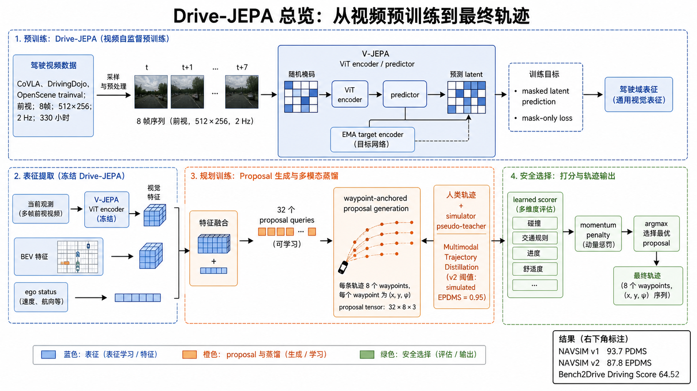
二、论文究竟在解决什么
2.1 为什么像素世界模型不是最优入口
像素级生成要求模型复原光照、纹理、天气等大量与规划无关的细节，计算成本高；传统 latent world model 虽然避免像素重建，但如果目标表征不稳定，模型可能只学到容易预测的静态模式。Drive-JEPA 选择预测目标视图的 latent，并将 encoder 的输出直接迁移给规划器。
2.2 为什么一条人类轨迹不等于一个场景只有一种答案
同一个路口可能存在“提前减速后左转”“先直行再并线”“等待后通过”等多个安全策略，但数据集中往往只记录驾驶员实际采取的那一条。若所有 query 都用同一 GT 做回归，最容易的解是全部 proposal 收敛到 GT 附近，形成 mode collapse。
三、机制一：V-JEPA 如何把视频变成规划可用表征
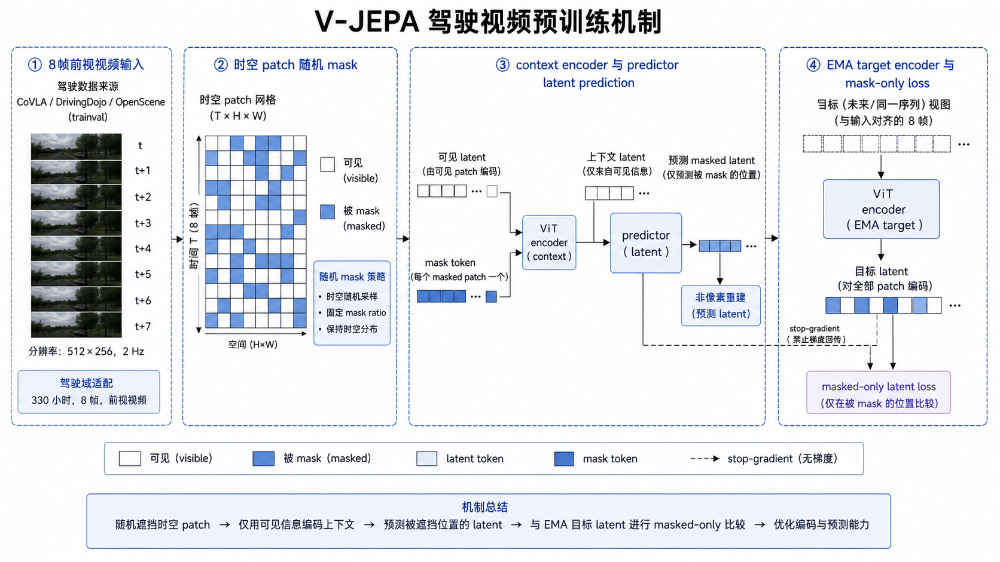
论文公式可以写成：
3.1 为什么 EMA 和 mask-only loss 都重要
EMA target：如果 target encoder 和 online encoder 同步快速变化，预测目标会不断移动，训练容易不稳定。EMA 让目标网络成为慢速教师，给 predictor 一个相对平滑的参照。mask-only：如果在所有位置计算损失，模型可以把可见内容复制得很好，却不一定学会推断未来；只监督 mask 位置，迫使它从上下文恢复不可见的动态结构。
3.2 驾驶域适配不是“换个输入尺寸”
作者先用 V-JEPA 2 checkpoint 初始化 ViT，再用驾驶视频继续训练。数据来自三个公开来源，全部是前视视频；这种域内继续预训练让 latent 的统计结构从通用动作/场景转向车道、车辆、路口和自车运动。表 1 中 V-JEPA 2 作为初始化得到 86.1 PDMS，驾驶域继续预训练后提升到 89.0 PDMS，说明增益不仅来自模型尺寸。
3.3 源码与论文的对应关系?
V-JEPA 源码与论文的对应关系源码与论文的对应关系关键机制解释? latent 源码与论文的对应关系源码与论文的对应关系源码与论文的对应关系源码与论文的对应关系源码与论文的对应关系源码与论文的对应关系源码与论文的对应关系源码与论文的对应关系源码与论文的对应关系源码与论文的对应关系关键机制解释? waypoint loss 关键机制解释
3.4 源码与论文的对应关系
图示与结论 1 源码与论文的对应关系（中文细节）LAW ? World4Drive 图示与结论 20 图示与结论图示与结论图示与结论 83.8 ? 85.1 PDMS?V-JEPA 2 图示与结论图示与结论? 86.1图示与结论 330 源码与论文的对应关系图示与结论 89.0源码与论文的对应关系源码与论文的对应关系源码与论文的对应关系源码与论文的对应关系源码与论文的对应关系 330 图示与结论图示与结论（中文细节） 2.9 图示与结论图示与结论 latent prediction 源码与论文的对应关系图示与结论（中文细节）
3.3 从视频预测到规划接口
latent 的价值不在于它“包含所有世界信息”，而在于它把对未来有用的变化压缩到规划器可读的 token。对相邻帧中的同一车辆，表征需要同时保持身份/位置的稳定性，又要反映速度与遮挡后的可见性变化；这比单帧 ImageNet 特征更接近轨迹头所需的条件变量。继续预训练的作用可以理解为改变 latent 的坐标系：通用视频中“人走路”和驾驶视频中“车辆横穿 ego path”不再被当作同一粒度的模式。
训练目标仍然是表征预测，不等价于显式估计未来坐标。后续 planner 通过 waypoint loss 把 latent 与几何空间对齐；因此 V-JEPA 与轨迹头之间存在一个必要的任务适配层，而不是把 latent 直接当作轨迹。这个区分解释了为什么预训练指标提升会传导到规划，但不能保证所有长尾交通规则都自动出现。
四、机制二：感知自由路径为什么是一个重要的“因果验证”
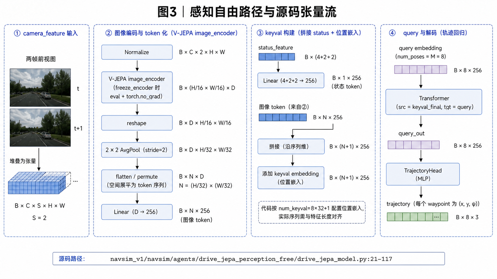
源码对应 `drive_jepa_perception_free/drive_jepa_model.py:87–117`：图中 reshape、pool、FC、status token、query 和 trajectory head 按 forward 的执行顺序排列。
这一实验的逻辑非常强：它没有 BEV detection、agent box、semantic map 或 simulator score，只用冻结/可训练的 V-JEPA 表征和简单 Transformer decoder 预测未来 waypoint。若仍能比既有 perception-free 方法高约 3 PDMS，说明主要贡献来自“表征中已经包含对规划有用的时空信息”，而不是靠复杂辅助头堆出来。
4.1 图示与结论图示与结论
? forward 图示与结论图示与结论 B C S H W 关键机制解释 ImageNet normalization图示与结论图示与结论? S=2源码与论文的对应关系源码与论文的对应关系图示与结论图示与结论图示与结论 torchvision 源码与论文的对应关系源码与论文的对应关系 reshape?AvgPool2d(kernel_size=2,stride=2) 图示与结论（中文细节） token 图示与结论图示与结论 decoder ? cross-attention 图示与结论image_fc ? backbone 图示与结论（中文细节） tf_d_model=256图示与结论 Transformer 图示与结论（中文细节） ViT-L/ViT-H/VIT-G 图示与结论图示与结论
源码与论文的对应关系 waypoint 源码与论文的对应关系图示与结论（中文细节） token图示与结论（中文细节） token 图示与结论? Transformer ? memory?8 ? query 图示与结论图示与结论（中文细节） pose 图示与结论query 源码与论文的对应关系trajectory head 图示与结论（中文细节） query （中文细节） 3 源码与论文的对应关系源码与论文的对应关系源码与论文的对应关系图示与结论图示与结论图示与结论 horizon 图示与结论图示与结论
4.3 为什么这个分支能做因果对照
感知自由分支去掉显式 BEV、目标检测和地图语义后，剩下的可学习路径只有“视频 latent→状态 token→query decoder→waypoint”。这相当于一个结构化对照实验：如果加入复杂感知头才有提升，说明 backbone 只是特征提取器；如果不加入这些头也能保持较高 PDMS，说明 V-JEPA 的时空坐标中已经存在可用于规划的关系信息。
维度上，假设 encoder 输出 32×8 个空间 token，池化后仍可用 256 维 memory 表达；status token 作为全局条件，query 则按未来时间索引读取 memory。于是第 t 个 query 不是独立回归器，而是共享 Transformer 参数下的时间条件读出器，这也是 heading 与位置能共同建模的原因。
五、机制三：Waypoint-anchored Proposal Generation 如何避免固定词表
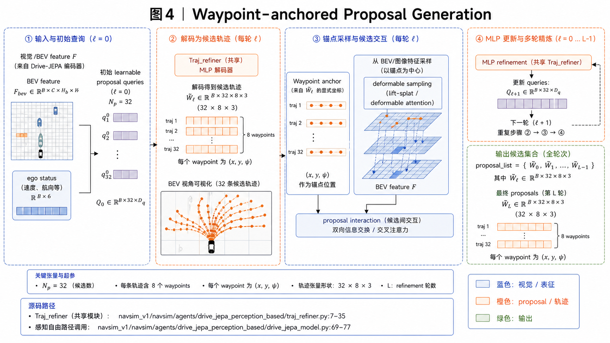
源码对应 `drive_jepa_perception_based/drive_jepa_model.py:69–77` 与 `traj_refiner.py:26–35`：proposal_list 的追加与共享 refiner 的迭代关系是本图的实现核心。
固定词表的缺点是量化误差：真实轨迹落在两个词条之间时，模型只能选一个近似模板。在线 proposal 则把“候选形状”作为连续变量学习。更关键的是，anchor 不是抽象 query index，而是实际落在道路坐标中的 waypoint；因此下一轮采样能读取“这条候选经过的位置附近有什么道路/车辆/边界”。
5.1 anchor 图示与结论图示与结论? query 图示与结论图示与结论（中文细节）
（中文细节） query 图示与结论图示与结论? 7 图示与结论图示与结论 waypoint anchor 源码与论文的对应关系源码与论文的对应关系 deformable attention 源码与论文的对应关系源码与论文的对应关系源码与论文的对应关系源码与论文的对应关系源码与论文的对应关系源码与论文的对应关系源码与论文的对应关系源码与论文的对应关系源码与论文的对应关系图示与结论（中文细节）
5.2 （中文细节） refinement 图示与结论图示与结论图示与结论
? 0 源码与论文的对应关系（中文细节） anchor sampling 源码与论文的对应关系源码与论文的对应关系图示与结论图示与结论（中文细节） query 源码与论文的对应关系图示与结论图示与结论 proposal_list 源码与论文的对应关系源码与论文的对应关系图示与结论 proposal 图示与结论图示与结论? refiner 源码与论文的对应关系源码与论文的对应关系源码与论文的对应关系图示与结论图示与结论?
proposal interaction 源码与论文的对应关系源码与论文的对应关系源码与论文的对应关系源码与论文的对应关系源码与论文的对应关系图示与结论 mode 图示与结论? MTD ? diversity loss图示与结论图示与结论（中文细节） 32 ? query关键机制解释 32 图示与结论图示与结论图示与结论
proposals[B,P,T,D]图示与结论图示与结论? P=32?T=8?D=3图示与结论? P?T?D 图示与结论图示与结论图示与结论 scorer?min matching 关键机制解释?5.4 与固定锚点/固定词表的根本差异
固定模板的误差通常在离线聚类阶段就被决定：没有出现在词表里的“先前探半个车身再等待”无法被精确表达。连续 anchor 则把候选空间从有限类别改成可微坐标；小的 anchor 位移会改变 deformable sampling 的局部证据，最终形成连续的轨迹变体。它不是无约束自由度，因为训练中的 GT/pseudo-teacher matching 与 scorer 仍把候选拉回可行道路分布。
proposal interaction 的作用是让候选彼此“看见”：一个 query 已占据直行模式后，其他 query 更有压力去解释左转、停车或绕行，而不是独立地重复最容易的直行解。这里的交互是集合层面的信息共享，diversity loss 是集合层面的几何排斥，二者共同降低 mode collapse。
六、机制四：Multimodal Trajectory Distillation 如何把模拟器变成教师
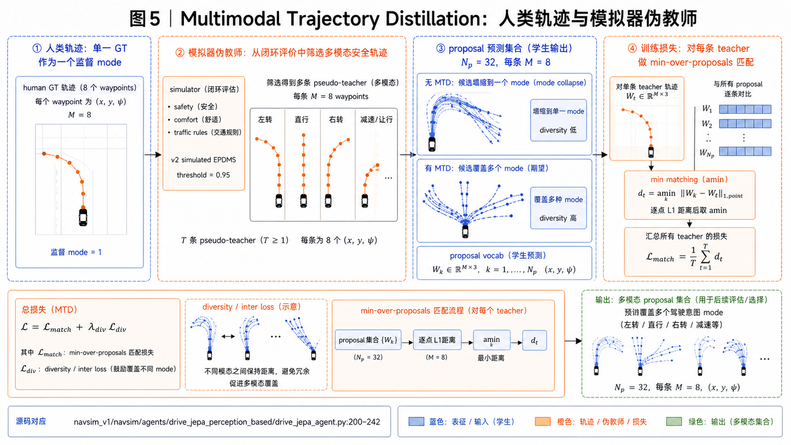
源码对应 `drive_jepa_perception_based/drive_jepa_agent.py:188–241`：广播差分、时间/状态维 L1、proposal 维 amin 和 diversity loss 的顺序不可调换。
核心监督不是“每条 proposal 都拟合每条 teacher”，而是：
这个 min 操作是多模态的关键：如果 teacher A 是左转，teacher B 是减速直行，那么 proposal 3 可以负责 A，proposal 17 可以负责 B；梯度不会强迫两者平均成一条“既不像左转也不像直行”的轨迹。代码还会在高质量 anchor 中最多随机抽取 4 条，避免每个样本的 teacher 数量和计算量无限增长。
6.1 图示与结论 min matching 图示与结论图示与结论?
（中文细节） simulator 图示与结论图示与结论?A 图示与结论图示与结论图示与结论B 源码与论文的对应关系图示与结论图示与结论（中文细节） proposal 图示与结论图示与结论 A ? B 源码与论文的对应关系源码与论文的对应关系图示与结论（中文细节）min matching 图示与结论（中文细节） teacher 关键机制解释? proposal图示与结论 proposal 3 图示与结论? A?proposal 17 图示与结论? B图示与结论图示与结论 mixture-of-experts 源码与论文的对应关系源码与论文的对应关系图示与结论
6.2 源码与论文的对应关系
图示与结论? scores_index 图示与结论图示与结论（中文细节） anchor图示与结论 anchor 图示与结论 proposal （中文细节） device/dtype ? tensor图示与结论图示与结论图示与结论 4 图示与结论图示与结论? 4 图示与结论? diff 图示与结论图示与结论（中文细节） teacher?proposal?time?state图示与结论图示与结论? L1图示与结论 proposal 图示与结论 amin图示与结论（中文细节） teacher源码与论文的对应关系图示与结论图示与结论（中文细节） batch 源码与论文的对应关系源码与论文的对应关系图示与结论?
6.3 diversity 图示与结论图示与结论
diversity/inter loss 源码与论文的对应关系源码与论文的对应关系源码与论文的对应关系图示与结论图示与结论? diversity 图示与结论图示与结论 EC 源码与论文的对应关系源码与论文的对应关系图示与结论图示与结论? Drive-JEPA 图示与结论图示与结论 proposal 源码与论文的对应关系图示与结论? scorer ? momentum-aware selection?
七、机制五：Momentum-aware Trajectory Selection 到底在惩罚什么
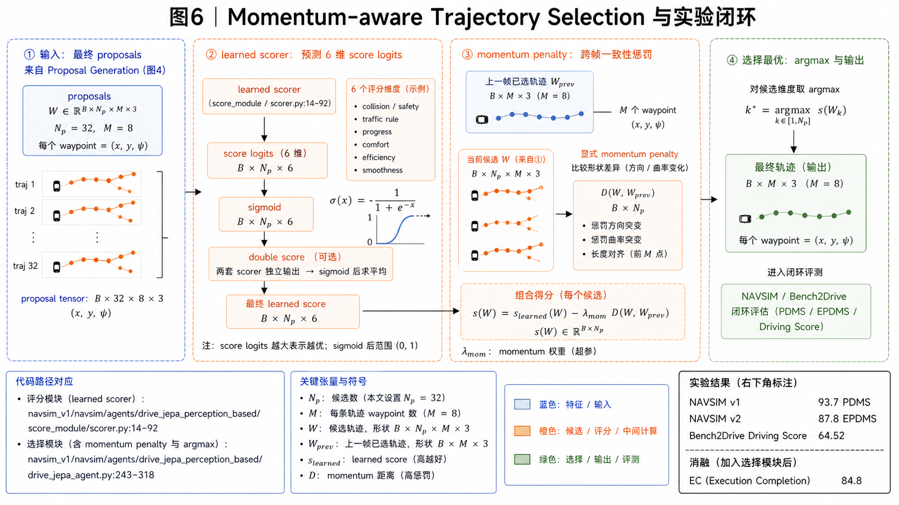
源码对应 `score_module/scorer.py:14–60` 与 agent 的选择逻辑：amax 是候选特征聚合，sigmoid 是 logit 转概率，argmax 才是最终离散选择。
动量项的意义不是让每条轨迹“更平滑”这么简单，而是把连续决策的历史纳入选择。当前帧可能同时存在一条更激进但瞬时分数更高的候选和一条与上一帧意图一致的候选；如果只看 learned score，车辆可能在两个候选之间来回跳，表现为方向、曲率或加速度突变。动量项把这种切换成本显式化。
7.1 learned score 图示与结论图示与结论图示与结论
learned scorer 图示与结论图示与结论图示与结论 feature 源码与论文的对应关系源码与论文的对应关系图示与结论图示与结论图示与结论momentum penalty 源码与论文的对应关系源码与论文的对应关系源码与论文的对应关系源码与论文的对应关系源码与论文的对应关系源码与论文的对应关系源码与论文的对应关系关键机制解释?
7.2 图示与结论 EC 关键机制解释
NAVSIM v2 ? Extended Comfort 源码与论文的对应关系关键机制解释 GT 源码与论文的对应关系源码与论文的对应关系源码与论文的对应关系图示与结论图示与结论 EC ? History Comfort 源码与论文的对应关系图示与结论 EC （中文细节） 84.8源码与论文的对应关系源码与论文的对应关系图示与结论图示与结论（中文细节）
7.3 double score 图示与结论（中文细节）
图示与结论（中文细节） double_score 图示与结论图示与结论? score head ? logits图示与结论 sigmoid 关键机制解释 score 图示与结论? PDM score源码与论文的对应关系（中文细节） logits 源码与论文的对应关系图示与结论?6图示与结论图示与结论 sigmoid 图示与结论图示与结论 torch.argmax 图示与结论? proposal源码与论文的对应关系源码与论文的对应关系图示与结论
7.4 一个数值化的切换例子
设当前有两个候选：A 是沿上一帧曲线继续行驶，learned score 为 0.82；B 是因前方施工向左绕行，当前 score 为 0.84。若 B 与历史轨迹差异较大，momentum penalty=0.10，则有效分数为 A=0.82、B=0.74，系统保持 A。下一帧施工边界更明确，B 的 learned score 升到 0.96，即使仍扣 0.10 也得到 0.86，超过 A，argmax 才切换。这个例子说明 penalty 只抑制小幅噪声，不应阻止强证据触发的安全改变。
实现时历史轨迹必须先变换到当前 ego frame，否则车辆自身位姿变化会被错误当作规划突变。论文机制因此同时依赖坐标系一致性、候选分数校准与 penalty 权重；仅复制 argmax 而忽略坐标变换，不能称为完整的 momentum-aware selection。
八、源码精读：从输入张量到训练目标，再到部署期轨迹
8.1 先分清两条模型路径：同一论文中的两个工程对象
仓库不是只有一个简单的 forward。它同时提供 drive_jepa_perception_free/drive_jepa_model.py 与 drive_jepa_perception_based/drive_jepa_model.py。前者是最干净的表征验证路径：视觉编码器、ego status、Transformer 和单条轨迹头；后者是完整的候选轨迹系统：图像 backbone、BEV 状态、共享 Traj_refiner、proposal 集合、scorer 以及最终选择。
这两个对象的差别不是“一个简化版、一个完整版”这么简单，而是两个不同的科学问题。perception-free 问“V-JEPA latent 本身能否支持规划”；perception-based 问“在显式空间表征和多候选解下，系统能否覆盖多种可行行为并选择最好的一个”。如果把两条路径的张量或实验数字混在一起，就会错误地把单轨迹回归的结果解释成多模态规划结果。
perception_free/drive_jepa_model.py:21–117 对应单轨迹路径；perception_based/drive_jepa_model.py:46–100 对应 proposal/refiner/scorer 路径。后文所有“单轨迹”和“候选集合”均保持这个边界。8.2 感知自由路径：每一步张量变换都在建立接口
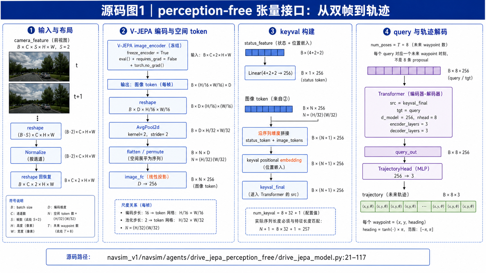
该图为当前任务针对源码机制重新生成的定向 paper-comic 资产。
进入 DriveJEPAModel.forward(camera_feature, status_feature) 时，图像不是直接喂给 Transformer，而是先被整理成 V-JEPA 预训练时期待的布局。代码假定 camera tensor 为 B×C×S×H×W，先用 rearrange 把时间维摊平为 (B·S)×C×H×W 做 normalization，再恢复成视频布局，并显式写死 S=2。这段实现揭示了一个重要工程事实：论文的 8 帧视频预训练与下游 planner 的双帧输入不是同一个接口，复现时不能看到“video encoder”就默认下游也输入 8 帧。
接着是冻结策略。初始化阶段如果 freeze_encoder=True，代码先让 image encoder 进入 eval()，再把所有参数设为 requires_grad=False；forward 中又用 torch.no_grad() 包住 encoder 调用。三个动作分别控制 dropout/normalization 的行为、参数是否接收梯度、计算图是否保存。它们叠加后，训练资源集中到 image-to-planner 的适配层，而不是在有限的下游数据上重新扰动 V-JEPA 的表征。
V-JEPA 输出的 token 形状随后被从 B×(H·W)×D 还原为 B×D×H×W。这里的 H 和 W 使用输入空间尺寸除以 16，说明代码把 ViT patch stride 当作空间坐标恢复依据。AvgPool2d(kernel_size=2,stride=2) 进一步将网格压缩一半；之后 flatten 空间维并转置为 token 序列。这个池化不是装饰性降采样：它让后续 Transformer 的 memory 长度与 num_keyval=8×32+1 对齐，并在保持局部道路结构的同时降低 cross-attention 成本。
视觉 token 的通道由 image_fc 从 backbone 维度映射到 256；ego status 的 4+2+2 个标量由 _status_encoding 也映射到 256。于是二者可以在 token 级别拼接，而不是把车辆速度、加速度等数值粗暴广播到每个像素位置。拼接后的最后一个 token 是全局自车条件，视觉 token 保留空间位置；再加上 _keyval_embedding，Transformer 才能区分“来自哪个空间格”的 token。
最后，代码复制 _query_embedding 作为 decoder 的 target。默认 query 数等于 trajectory_sampling.num_poses，不是候选数；每个 query 代表一个未来采样时刻。Transformer decoder 让每个时间 query 读取全体视觉和状态 memory，TrajectoryHead 再把每个 256 维隐藏向量变成 3 个量。heading 使用 tanh×π 限制范围，最终得到单条 B×T×3 轨迹。由此可以准确解释图 3：它画的是“特征接口和时间读出”，不是 8 种驾驶模式。
8.3 感知型路径：proposal 不是一次性输出，而是一个被反复修正的集合
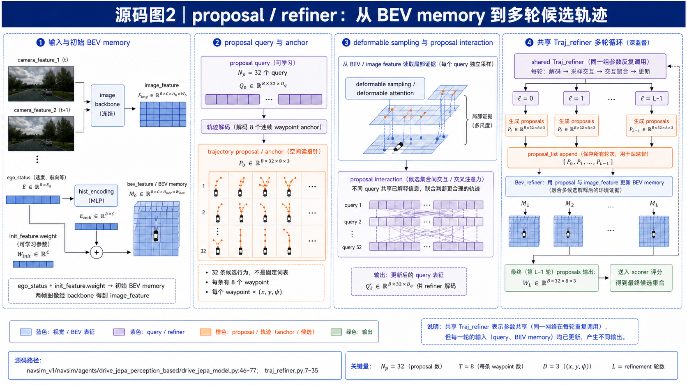
该图为当前任务针对源码机制重新生成的定向 paper-comic 资产。
感知型模型先取最后时刻的 ego status，并把两帧 camera feature 组织成 backbone 输入。backbone 产生 image_feature；ego status 经 hist_encoding 形成一个状态 token，再与 init_feature.weight 相加，得到初始 bev_feature。这一步的本质是给 BEV 空间一个带有自车条件的“工作记忆”，后续轨迹候选和图像证据都在这个记忆上交互。
真正关键的是下面的循环：模型创建空的 proposal_list，然后多次调用共享的 Traj_refiner。每轮 refiner 先从当前 BEV/image 条件生成 proposals，把它追加到列表，再用这些 proposal 反过来更新 BEV 表征。也就是说，第 r 轮不是独立地重新预测，而是在第 r−1 轮已经提出的几何假设上继续修订；共享参数只意味着使用同一套修订规则，不意味着每轮输入相同或输出相同。
为什么要保留整个 proposal_list 而不只保留最后一轮？因为训练需要给中间轮次提供监督。如果只有最后一轮有 loss，早期轮次可能学不到“先提出可修正的粗解”；保留列表可以对每轮 proposal 计算轨迹误差和 diversity 约束，形成深监督。推理时通常取 proposal_list[-1]，但训练时中间状态仍然是优化链路的一部分。
Traj_refiner 内部的两个角色也需要分开理解：trajectory decoder 负责把 query/BEV 变成几何候选，Bev_refiner 负责让候选与图像空间证据重新对齐。前者回答“我想采取什么动作”，后者回答“当前视觉证据是否支持这个动作”。因此 waypoint anchor 是可学习的查询位置，不是事先写好的轨迹模板；deformable sampling 让每条候选在自己的 anchor 附近读证据。
proposal interaction 的意义在于把候选当作一个集合进行建模。若每个 query 完全独立，32 个 query 很容易重复输出最常见的直行轨迹；交互让候选知道集合中已经有哪些行为，从而为左转、停车、绕行等其他模式留下空间。它仍然不能单独保证多模态，真正的分工压力来自下一节的 minimum matching 与 diversity loss。
proposal_list 表示多轮状态而非 32 个模式的静态词典。8.4 训练目标：agent 如何让不同 proposal 各自负责不同教师
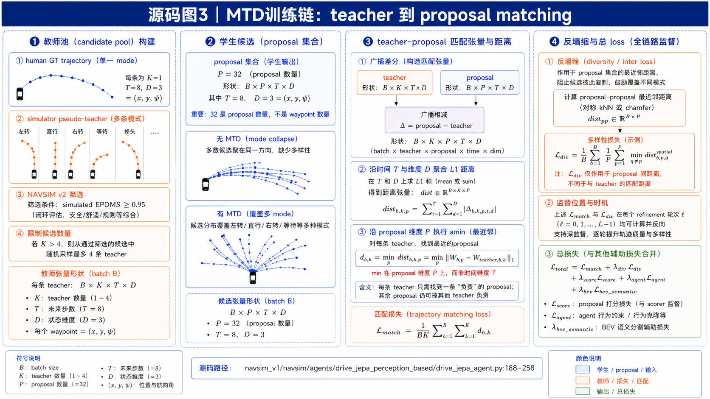
该图为当前任务针对源码机制重新生成的定向 paper-comic 资产。
训练逻辑位于 drive_jepa_perception_based/drive_jepa_agent.py:188–258。它不是把最终 argmax 轨迹拿来直接回归，而是先拿到所有 refinement 轮次的 proposal 集合和每个样本的教师轨迹索引。这样做是必要的：argmax 是离散选择，若训练时只保留被选中的一条，未被选中的候选没有梯度，也就不可能形成多模态集合。
对 human GT，代码按样本取得 anchor，并计算 proposal 与目标之间的绝对差。对模拟器教师，先根据 scores_index 取高质量轨迹；超过 4 条时最多随机采样 4 条，然后转换到 proposal 所在 device 和 dtype。这里的随机采样不是随意丢数据，而是一个计算预算上限：教师模式过多会让每个样本的匹配张量扩大，且让少数“教师丰富”的场景支配训练。
最核心的广播操作把 proposal 张量扩展成类似 (B,K,P,T,D) 的比较对象：B 是 batch，K 是教师数量，P 是 proposal 数，T 是 waypoint 时间，D=3 是 x/y/heading。先沿时间和状态维聚合 L1，得到每个教师与每个 proposal 的整体距离，再沿 P 维执行 amin。这个 amin 的语义是“每个教师只需要找到一个负责它的 proposal”，而不是“所有 proposal 都要靠近所有教师”。
具体地说，若模拟器提供“立即左转”和“等待对向车后左转”两条教师轨迹，minimum matching 可以让 proposal 3 靠近第一条、proposal 17 靠近第二条，其他 proposal 不必被迫回归二者的平均值。普通 L1 平均会制造一条既不立即转弯、又没有真正等待的中间轨迹；minimum matching 则把监督从单点回归改成集合覆盖。
与此同时，diversity_loss 计算 proposal 之间的距离并寻找最近邻，再用负号把“最近邻不要太近”变成最小化目标。它与 minimum matching 的职责不同：前者保证教师被覆盖，后者阻止候选彼此塌缩。只有 diversity 没有教师约束，候选可能在不可行区域盲目分散；只有 matching 没有 diversity，多个 proposal 仍可能争抢同一教师。
代码还对 proposal_list 的每一轮计算这些损失，再按配置权重与 score、agent、BEV semantic 等损失合并。由此可见，训练阶段优化的是一个“候选集合 + 辅助任务”的结构，而不是一个直接输出最终答案的黑盒回归器。图 5 中的教师池、广播差分、amin 和 diversity 不是四个并列技巧，而是一条防止 mode collapse 的连续实现链。
amin，明确表示最小匹配发生在候选维，而非时间维。8.5 评分与推理：从候选集合中选出一条可执行轨迹
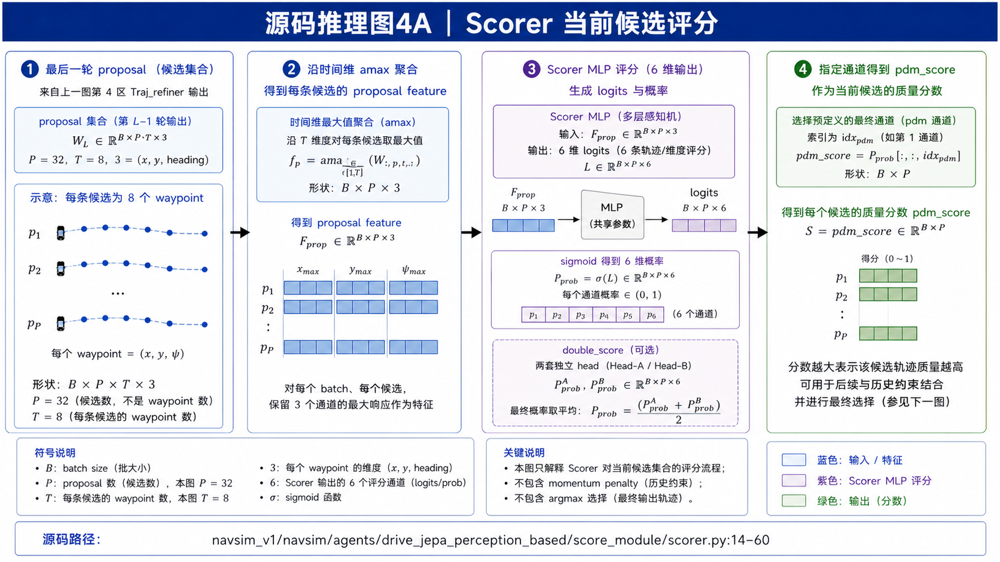
该图为当前任务针对源码机制重新生成的定向 paper-comic 资产。
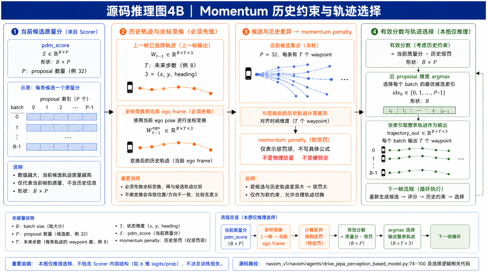
该图为当前任务针对源码机制重新生成的定向 paper-comic 资产。
score_module/scorer.py:14–60 的 scorer 接收最终 proposal 和 BEV feature。它先沿 proposal 的时间维做 amax，把一条轨迹上最显著的交互/风险证据汇总成候选级特征，再由 MLP 输出 6 个 score logits。这个时间维 max-pooling 的含义不是只看最后一个 waypoint，而是让轨迹中最关键的局部事件（例如突然靠近行人或越过边界）能够影响整条候选的评分。
如果启用 double_score，代码使用两套 score head，分别经过 sigmoid 后求平均。它不是把两套结果拼接成更多驾驶模式，而是用两个独立估计降低单一评分头的偶然偏差。随后主模型取指定的最终分数通道形成 pdm_score，在 proposal 维执行 argmax，并用 batch 索引取出对应的整条轨迹。
这解释了 learned scorer 与 momentum penalty 的边界。scorer 看当前帧和当前候选，回答“现在这条轨迹质量如何”；momentum 模块看历史已选轨迹与当前候选的差异，回答“切换是否过于突然”。前者是观测条件下的质量估计，后者是时间轴上的变化约束。它们不能互相替代：没有 scorer，系统不知道哪条候选安全；没有 momentum，分数轻微波动就可能让输出在相邻候选之间抖动。
一个数值例子：当前候选 A 的 learned score 为 0.82，候选 B 因施工绕行得分 0.84，但 B 与历史轨迹差异产生 0.10 penalty，于是有效分数为 A=0.82、B=0.74，系统暂不切换。下一帧施工边界更明确，B 的 learned score 升到 0.96，扣除同样 penalty 后仍为 0.86，超过 A，系统才切换。momentum 抑制的是无充分证据的抖动，不是禁止安全改变。
8.6 把整个训练—推理链路串起来
训练前：V-JEPA 先在驾驶视频上学习 masked latent prediction，得到可冻结或可微调的视觉 encoder。下游样本提供 camera frames、ego status、human trajectory，以及可选的 simulator pseudo-teacher 和辅助感知标签。数据进入模型后，视觉输入被转成 image/BEV feature，状态被编码为全局条件，proposal decoder 产生候选集合。
训练中：每轮 refinement 都保留 proposal；human GT 与高质量模拟轨迹通过 minimum matching 分配给不同候选；diversity/inter loss 拉开最近邻候选；scorer、agent、BEV semantic 等辅助头提供额外监督。总损失的核心不是“让一条轨迹更像 GT”，而是同时让集合覆盖教师、候选彼此分工、评分头学会排序。
推理时：不再构造 teacher，也不计算训练损失。模型根据当前观测生成最终 proposal 集合，scorer 输出当前质量，历史轨迹经过坐标对齐后形成 momentum penalty，候选得分经过历史一致性修正，argmax 选出一条 B×T×3 轨迹交给控制器。下一帧重复同一流程，但历史轨迹进入新的选择决策。
因此完整系统的真正数据链路是：视频帧 → V-JEPA/图像 backbone → 空间 token 或 BEV memory → waypoint/query proposal → 多轮 refinement → 候选集合 → scorer 与历史一致性 → 最终轨迹；真正的训练链路是：候选集合 → human/pseudo-teacher matching → diversity → 多头辅助损失 → 反向更新 planner/scorer。前者解释“系统如何运行”，后者解释“系统为什么会学会多模态且稳定”。
8.7 配置与训练启动：实现契约如何落到命令行
配置文件决定的不是“超参数表上的数字”，而是张量接口能否闭合。例如 trajectory_sampling 的 time_horizon=4 与 interval_length=0.5 决定未来采样时间轴，进而决定 trajectory head 的 num_poses；tf_d_model=256 必须同时被 image FC、status encoding、Transformer 和 scorer 接受。num_keyval 则必须等于池化后的视觉 token 数加 status token，否则位置 embedding 无法与拼接后的 memory 对齐。这些配置不是孤立旋钮，而是一组相互约束的形状合同。
感知型配置还打开了检测、BEV semantic 和 agent state 辅助头。它们的 loss weight 决定训练时共享 BEV memory 会被哪些任务塑形：trajectory weight 让几何候选靠近教师，pred/agent/BEV semantic 权重让同一 memory 保留可用于安全评估的环境信息，prev weight 则为历史相关项提供接口。即使某个辅助头在最终推理输出中不直接出现，它仍可能通过共享特征改变 proposal 的质量；因此复现实验时不能只复制模型类，而要同时复制 config。
训练脚本 train_drive_jepa_perception_based.sh:6–15 用 torchrun 启动 DDP，batch size=32、max epochs=20，并把缓存目录绑定到 NAVSIM_EXP_ROOT。ddp_find_unused_parameters_true 暗示模型存在配置相关的可选分支，某些 batch 或设置下并非每个 head 都参与同一次反向传播。use_cache_without_dataset=True 与 force_cache_computation=False 又把数据预处理缓存作为运行时前置条件；因此“代码能 import”远远不等于“训练可复现”。
实际排查时应沿下面顺序检查：第一，确认 camera feature 的时间/通道/空间顺序；第二，打印 encoder token、pool 后 token、status token 和 keyval embedding 的长度；第三，确认 proposal 为 B×P×T×3 且 teacher 为 B×K×T×3；第四，确认 scorer 的 proposal 维与 argmax 索引一致；第五，确认历史轨迹已经变换到当前 ego frame。这样可以把形状错误、坐标系错误和训练目标错误分开定位，而不是看到 loss 为 NaN 才从头猜测。
九、实验：哪些结果真正支持这些机制
| 实验 | 结果 | 它证明了什么 |
|---|---|---|
| NAVSIM v1 | 93.7 PDMS | 安全指标高，同时 DAC 与 Ego Progress 领先；不是只靠保守驾驶。 |
| NAVSIM v2 | 87.8 EPDMS | 在 DDC、TLC、LK、HC、EC 等更丰富指标下仍有效。 |
| Bench2Drive | Driving Score 64.52；SR 36.82 | 多模态蒸馏在闭环中改善可行驾驶质量。 |
| 视觉预训练 | DINOv2 76.1；SigLIP 83.4；V-JEPA2 86.1；Ours 89.0 | 驾驶域 V-JEPA 继续预训练带来额外收益。 |
9.1 消融的因果链
消融不是“模块越多越好”的简单叠加：V-JEPA 2 checkpoint 提供起点；驾驶视频预训练缩小域差；MTD 提升 diversity 与总体质量，但过强 diversity 可能损伤 EC；加入 momentum-aware selection 后 EC 提升到 84.8，并得到 87.8 EPDMS。这个结果支持一个重要判断：生成阶段追求覆盖，选择阶段负责把覆盖重新投影到舒适、安全的单一路径。
9.2 指标如何影响阅读
NAVSIM v2 的 EPDMS 不是单一平均误差，而是多个乘法安全/合规项与加权进度、TTC、车道保持和舒适项的组合。特别是 EC 检查连续时间步的平滑性，所以它比单帧 waypoint L1 更能暴露 proposal 切换和历史不一致问题。
十、把整套机制放进一个具体左转场景
假设自车接近一个无保护左转路口：前视视频显示对向车辆、停止线和左侧出口；ego status 给出当前速度和“左转” command。
- V-JEPA：从当前与历史帧的变化中形成对对向车速度、路口几何和可行空间有用的 latent，而不是只记住一张静态图片。
- Proposal：32 个 query 生成多条连续轨迹：提前减速等待、保持车道观察、在空档完成左转。
- Waypoint anchor：每条候选的 waypoint 让采样器读取其路径附近的 BEV/图像证据；若某候选穿过不可行驶区域，细化轮次可以修正它。
- MTD：人类 GT 可能只有“等待后左转”，但 simulator 可以提供“更早减速”“更大转弯半径”等同样安全的伪教师；min matching 让不同 proposal 各自承担一种模式。
- Selection：评分器考虑安全、规则和进度，动量项再避免本帧突然从“等待”切到极激进的左转，最终输出一条连续轨迹。
十一、局限、失败模式与复现边界
- 模拟器偏差：pseudo-teacher 依赖 simulator 评分，可能把模拟器的交通行为偏好蒸馏到模型。
- 多样性—舒适性张力：diversity 过强会生成更多模式，但可能降低 EC；不能单独最大化 diversity。
- 版本边界：v1/v2、perception-free/perception-based 分目录实现，源码解释必须带版本与路径。
- 复现成本：330 小时视频预训练、V-JEPA checkpoint、metric cache 和 NAVSIM 环境都是结果闭环的一部分。
- 现实部署：NAVSIM/Bench2Drive 的优秀分数不能替代真实道路验证，尤其是传感器噪声、长尾交互和未建模行为。
十二、复现与审计清单
8 帧；512×256；2 Hz；330 小时驾驶域视频；正确的 NAVSIM cache 路径。
V-JEPA 2 初始化；freeze_encoder 状态；Np=32；M=8；tf_d_model=256。
人类 GT min loss；最多 4 条 pseudo-teacher；threshold=0.95；diversity/inter loss。
建议先运行 perception-free 下游，验证 V-JEPA latent 是否能复现约 3 PDMS 的提升；再运行 proposal/refiner；最后接入 scorer、metric cache 和闭环选择。任何“训练成功”都必须进一步检查 checkpoint、proposal shape、最终轨迹和实际 metric artifact。
十三、来源与交付证据
arXiv:2601.22032v2GitHub commit e21f474NAVSIM v1/v2Bench2Drive
报告引用的源码均来自本地固定 commit；六张图片均为本任务生成并视觉审校的正式资产。图片哈希、报告哈希与文件大小记录在 report_assets/manifest.json。